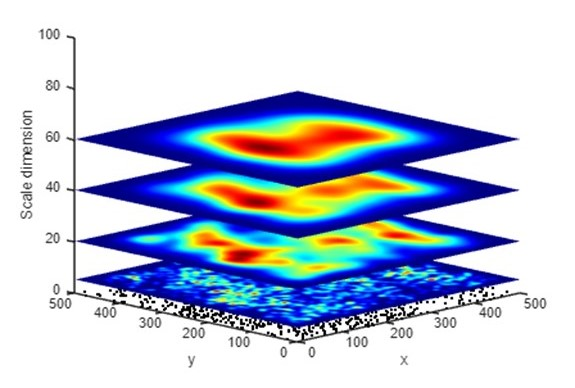

path_table = "E:/Projects/Pyramid_model/tables/"
CroScalar Tutorial: Multi-Scale Point Pattern Analysis in 3D Pyramid Framework (LOCAL VERSION)
Introduction
Many spatial analysis methods suffer from the scaling issue identified as part of the Modifiable Areal Unit Problem (MAUP). This tutorial introduces an innovative solution: the Pyramid Model (PM), a hierarchical data framework that integrates space and spatial scale in a 3D environment to support multi-scale analysis. To demonstrate the PM's effectiveness, we explore its application in examining two commonly used measures of point patterns: quadrat density and kernel density. Using a simulated point set, we compute these metrics with varying scaling parameters (quadrats and bandwidths) and represent the results within the PM framework. The PM permits examination of the variation of the density metrics computed at all different scales. 3D visualization techniques (e.g. volume display, isosurfaces, and slicing) allow users to observe nested relations between spatial patterns at different scales and understand the scaling issue and MAUP in spatial analysis. The PM provides a novel framework to facilitate the comprehension and analysis of multi-scale spatial patterns and relations. The ultimate goal here is to equip researchers and practitioners with the necessary knowledge and tools to effectively utilize the 3D Pyramid Model, potentially transforming their approach to spatial analysis and addressing the challenges posed by the MAUP.
Prerequisite Knowledge
We are assuming you have basic working knowledge of GIS and MATLAB.
Setup
MATLAB
This tutorial requires the use of MATLAB.
If you do not already have MATLAB, please download and install it now. Note that MATLAB is proprietary software, but you may have free access through your university or employer. Follow the preset settings during installation.
Once downloaded and installed, open MATLAB.
- Install Image Processing Toolbox: Open MATLAB, go to the 'Home' tab, click 'Add-Ons', search for 'image processing toolbox', and install it.
- Install Fast 2D Peak Finder: In the Add-On Explorer, search for 'Fast 2D peak finder' and click 'Add to MATLAB' to make the FastPeakFind function available.
- Install Statistics and Machine Learning Toolbox: Search for and install this toolbox, which provides essential functions for statistical analysis, probability distributions, and machine learning algorithms.
This tutorial was created in July 2024, working with MATLAB R2024a.
Part 0: Data Pre-Processing
Several data points were generated through simulation for the Part 1 inputs. The specific simulation process is detailed below.
- Simulated point set in a 500 × 500 unit artificial study area
- Points represent individual events such as crime incidents or disease victims
- Complex, multi-scale patterns are created by combining four clustered point sets
- Simulation details (Uses the Python Spatial Analysis Library (PySal)) - Poisson cluster process:
- n parent points randomly distributed within the study area
- m child points simulated within a radius r centered around each parent point
- Clustering process:
- 4 sets of points with different clustering patterns (varying n, m, r) are combined by overlay
- The combined point set is used to test the PM's ability to detect multi-scale patterns
The simulated point set. a) – d) four clustered point sets simulated using different parameters. e) the composite point set combining a) – d).
Note:
For intuitiveness, a square study area is used in the experiment in this study. However, the PM has various configurations to represent spatial data in other tessellations (hexagons, Voronoi polygons, and irregular polygons), where the coordinates of points in the 3D space (x, y, z) are defined differently to meet specific analytical purposes.
Part 1
Part 1A: Data Input
Launch MATLAB and use the Open command to access your .mlx file.
Tip: A MATLAB Live Script (.mlx) is an interactive document that integrates code, results, and narrative text in a single environment.
First, you need to modify the paths in the script to where you've stored the MATLAB function folder.
addpath('E:/Projects/Pyramid_model/Matlab_code/function');
Define the path to the directory containing the table files.
path_table = "E:/Projects/Pyramid_model/tables/"
Read the table for simulation points from the CSV file.
pnts = readtable(path_table+"sim_pnts_cluster.csv"
Set the directory path for storing output figures.
path_fig = "E:/Projects/Pyramid_model/figures/";
path_fig_r = "E:/Projects/Pyramid_model/figures/review_response/";
path_fig_r = "E:/Projects/Pyramid_model/figures/review_response/";
Disable all warning messages to prevent interruptions during script execution.
warning('off','all')
Load the pyramids of clustered and random points.
array3D_raw = load(path_table + "array3D_raw2_2.mat";
array3D_raw = array3D_raw.vect;
array3D_raw_ran = load(path_table + "array3D_raw_ran2_2.mat"
array3D_raw_ran = array3D_raw_ran.vect;
array3D_raw = array3D_raw.vect;
array3D_raw_ran = array3D_raw_ran.vect;
Here, we performed a percentile operation on the original data, which will be used to generate voxels representing the top 1% of high-density areas measured at each window size.
array3D_pct = load(path_table + "array3D_pct2_2.mat";
array3D_pct = array3D_pct.vect;
array3D_pct_ran = load(path_table + "array3D_pct_ran2_2.mat";
array3D_pct_ran = array3D_pct_ran.vect;
array3D_pct = array3D_pct.vect;
array3D_pct_ran = array3D_pct_ran.vect;
We import the normalized 3D array data for both clustered and random patterns. These normalized datasets ensure consistent scaling, enabling accurate comparisons and enhanced pattern analysis in our simulation study.
array3D_norm = load(path_table + "array3D_norm2_2.mat";
array3D_norm = array3D_norm.vect;
array3D_norm_ran = load(path_table + "array3D_norm_ran2_2.mat";
array3D_norm_ran = array3D_norm_ran.vect;
array3D_norm = array3D_norm.vect;
array3D_norm_ran = array3D_norm_ran.vect;
Load density peak.
max_density = readtable(path_table+"max_density.csv";
max_density_ran = readtable(path_table+"max_density_ran.csv";
max_density_ran = readtable(path_table+"max_density_ran.csv";
Part 2: Quadrat Density Visualization
Part 2A: Representing quadrat density (clustered) in PM
Quadrat density suffers effects of MAUP when choosing quadrat size. Here, we demonstrate the PM representations of quadrats of the simulated point set. Point density is computed in square quadrats of different sizes, which are projected to points in a 3D space. Unlike the traditional quadrat analysis in a fixed tessellation, point density in the PM is computed in a moving window rolling through the point set. This process is repeated for different window sizes. Next, the computed density D of each window is projected to a point (x, y, z) in the 3D PM, where x and y are the centroid of the window and z corresponds to the window size. For computation and visualization, the point lattice in the PM is implemented as a 3D matrix where each voxel represents a specific window.
In other words, the construction of a PM stacks density rasters computed for different window sizes into a 3D pyramid. Here, we define z as equal to half of the length of one side of the window. Thus, a voxel at (x, y, z) represents a window whose centroid is at (x, y) and the side length is 2z. As such, the point density computed for all window sizes is represented by voxels in a 500*500*250 pyramid.
Below is the point density in different sizes of moving windows. Note that in the MATLAB interface you can click and drag to manipulate the perspective.
% Clear current figure and reset hold state
cla;
hold off;
% Plot original point set as black dots on the base plane
scatter3(pnts.x,pnts.y,pnts.y*0,5,'filled','MarkerFaceColor','black');
% Iterate through different window sizes (scales)
for slice_v = [5,20,40,60]
hold on;
% Create a slice of the normalized 3D array at the current scale
sl = slice(array3D_norm,[],[],slice_v,'EdgeColor','none');
sl.EdgeColor = 'none';
iso_value_s=num2str(slice_v);
colormap('jet');
grid off;
% Set up visualization parameters
view(-45,15);
xlabel('x')
ylabel('y')
zlabel('Scale dimension')
% Set axis limits to match the 500x500 study area
xlim([0 500]);
ylim([0 500]);
zlim([0 100]);
drawnow;
end
exportgraphics(gcf,strcat(path_fig,'KD_slices','.png'),'Resolution',300);
hold off;

Part 3: Kernel Density Visualization
Part 3A: Representing kernel density (clustered) in PM
The result of spatial analysis often varies at different scales. Even the answer to a simple question “where are the points densest” can differ when computed at different scales. To demonstrate this phenomenon, the global density peak at each height (z) in the PM is selected and linked into a sequence. A global density peak is the position where the point density is highest when measured at a specific scale (window size). The density peak is represented by the point at (x, y, z) where (x, y) denotes the centroid of the window and z indicates the window size. In a PM, kernel density maps created with different bandwidths are placed at different heights in the 3D space. As the default function in most GIS, kernels are created using the quartic (biweight) function. In the PM, each voxel at (x, y, z) represents the kernel density computed using a specific bandwidth z at the horizontal position (x, y).
As shown below, the global density peak in a kernel density map changes with the bandwidth. The horizontal location of the density peak shifts dramatically at low z levels (small bandwidths). As z (bandwidth) increases, the density peak stabilizes and gradually moves toward the center of the study area. The movement of the global density peak in the PM visualizes the process of how spatial analysis result changes at different scales. It is important to note that positional shifts and extreme magnitude variations are readily apparent within the PM framework, but would be more difficult to identify exhaustively in a singlescale or selective-scale analysis.
cla;
% Extract coordinates from max_density structure
x1 = max_density_ran.x;
y1 = max_density_ran.y;
z1 = max_density_ran.z;
% Plot the 3D line of maximum density
plot3(x1,y1,z1);
colormap('jet');
% Create a colored line patch representing the density peak
patch([x1.' nan],[y1.' nan],[z1.' nan],[z1.' nan],'FaceColor','none','EdgeColor','interp','LineWidth',1.5);
hold on;
colorbar
view(3)
xlim([0 500]);
ylim([0 500]);
pbaspect([1 1 z_scale]);
view([-60 20]);
xlabel('x');
ylabel('y');
zlabel('z (bandwidth/)');
hcb=colorbar;
hcb.Title.String = "z (bandwidth)";
title('Global density peak (random pattern)')
% Set final view angles (full view at an oblique view angle)
ath=-45;
alt = 15;
view(ath,alt);
grid on;
% Export the figure as a high-resolution PNG
exportgraphics(gcf,strcat(path_fig_r,'peaks_ran2_',num2str(ath),'-',num2str(alt),'.png'),'Resolution',300);
hold off;
Part 3B: Representing kernel density (random) in PM
To explore the inferential potential of the PM, we compared the PM visualization of kernel density between the simulated point set and a random point set with the same number of points. Below demonstrate the kernel density of random points in the PM. The global density peak of the clustered point set stabilized quickly at a fine scale (small bandwidth), while the global peak of the random point set shows dramatic shifts until reaching a coarser scale (bandwidth ≈ 50).
cla;
% Extract coordinates from max_density structure
x1 = max_density_ran.x;
y1 = max_density_ran.y;
z1 = max_density_ran.z;
% Plot the 3D line of maximum density
plot3(x1,y1,z1);
colormap('jet');
% Create a colored line patch representing the density peak
patch([x1.' nan],[y1.' nan],[z1.' nan],[z1.' nan],'FaceColor','none','EdgeColor','interp','LineWidth',1.5);
hold on;
colorbar
view(3)
xlim([0 500]);
ylim([0 500]);
pbaspect([1 1 z_scale]);
view([-60 20]);
xlabel('x');
ylabel('y');
zlabel('z (bandwidth/)');
hcb=colorbar;
hcb.Title.String = "z (bandwidth)";
title('Global density peak (random pattern)')
% Set final view angles (full view at an oblique view angle)
ath=-45;
alt = 15;
view(ath,alt);
grid on;
% Export the figure as a high-resolution PNG
exportgraphics(gcf,strcat(path_fig_r,'peaks_ran2_',num2str(ath),'-',num2str(alt),'.png'),'Resolution',300);
hold off;
Part 4: High-density voxels of kernel density
Part 4A: Representing ISO surface in complete z-axis (clustered)
In addition to the global density peak, moving windows in which the density exceeds a certain threshold can be selected and displayed as voxels in the PM. As the distribution of point density varies in different window sizes, we use percentiles as the threshold to select high-density windows. The PM visualization presented here highlights voxels in the 99th percentile of point density at each z level. These voxels represent the top 1% of high-density areas measured in each window size.
Below, we see many subtle high-density voxels are scattered at lower z levels, indicating that many small point clusters exist at a fine scale. As the scale becomes coarser (z increases), the scattered voxels converge to larger clusters of voxels. These clusters represent spatial locations and scales where the point density is high. At fine scales (z < 10), the high-density voxels are scattered at different positions in the horizontal dimensions, which represent many clusters detected at finer scales. As the z (bandwidth) increases, the scattered voxels disappear, leaving only a cylinder of voxels around the density peak.
cla reset;
% Set the isosurface threshold to 99%
isovalue=0.99;
lim_z=100; % Set the upper limit for the z-axis
% Extract coordinates of maximum density
x1 = max_density.x;
y1 = max_density.y;
z1 = max_density.z;
array3D = array3D_pct(:,:,1:lim_z);
p = patch(isosurface(array3D,isovalue));
p.FaceColor = '#99A3A4';
p.EdgeColor = 'none';
% Create an isosurface patch
patch(isocaps(array3D,isovalue),'FaceColor','#99A3A4','EdgeColor','none');
xlim([0 500]);
ylim([0 500]);
zlim([0 lim_z]);
isonormals(array3D,p);
xlabel('x');
ylabel('y');
zlabel('z (bandwidth)');
title('High density voxels (clustered pattern)')
pbaspect([1 1 0.75]);
ath=-45;
alt = 15;
view(ath,alt);
% Add lighting to enhance 3D effect
camlight;
lighting gouraud;
grid on;
exportgraphics(gcf,strcat(path_fig_r,'KD_isosurface_cls',num2str(ath),'-',num2str(alt),'.png'),'Resolution',300);
Part 4B: Representing ISO surface in complete z-axis (random)
The PM's high-density voxels exhibit distinct spatial configurations for clustered versus random point patterns. The 99th high-density voxels of the clustered point set are more concentrated, which results in a major column extending from finer scales to coarse scales. In contrast, the high-density voxels of the random set tend to appear at multiple locations, and these voxels converge to a single column at a higher level.
cla reset;
% Set the isosurface threshold to 99%
isovalue=0.99;
x1 = max_density_ran.x;
y1 = max_density_ran.y;
z1 = max_density_ran.z;
array3D = array3D_pct_ran(:,:,1:lim_z);
% Create an isosurface patch
p = patch(isosurface(array3D,isovalue));
p.FaceColor = '#99A3A4';
p.EdgeColor = 'none';
patch(isocaps(array3D,isovalue),'FaceColor','#99A3A4','EdgeColor','none');
xlim([0 500]);
ylim([0 500]);
zlim([0 lim_z]);
isonormals(array3D,p);
xlabel('x');
ylabel('y');
zlabel('z (bandwidth)');
title('High density voxels (random pattern)')
pbaspect([1 1 0.75]);
ath = -45;
alt = 15;
view(ath,alt);
camlight;
lighting gouraud;
exportgraphics(gcf,strcat(path_fig_r,'KD_isosurface_ran',num2str(ath),'-',num2str(alt),'.png'),'Resolution',300);
hold off;
Part 5: Local Density peaks
Part 5A: Representing local density peaks (clustered)
In addition to the global peak, local peaks (also known as local maxima) can reveal additional point clusters. A local peak reflects a point (x,y) where the value (i.e. density) is higher than values at the surrounding points. As the bandwidth increases, subtle clusters at local scales are gradually smoothed out and general clusters at coarser scales start to emerge. In this study, the algorithm developed by Natan (2021) was used to detect local peaks in kernel density maps. The algorithm repeats for each bandwidth to create multi-scale kernel density maps in the PM. First, we will use the FastPeakFind function, analyze each slice of your 3D array to detect peaks. Store these peaks in a table.
Compute peaks in all levels (clustered)
cla reset;
% Create empty table to store peaks in all levels
variable_names_types = [["id", "int16"];["x", "int16"]; ["y", "int16"]; ["z", "int16"]];
% Make table using fieldnames & value types from above
all_coords_cls = table('Size',[0,size(variable_names_types,1)],...
'VariableNames', variable_names_types(:,1),...
'VariableTypes', variable_names_types(:,2));
% Iterate through each z-level (bandwidth) of the 3D array
for z = 1: s(3)
%z = 1;
[cent, varargout]=FastPeakFind(array3D_raw(:,:,z), 0);
s_cent = size(cent);
% Initialize matrix to store peak coordinates
coords = zeros(s_cent(1)/2,4);
% Extract and store peak coordinates
for i = 1:s_cent(1)/2
coords(i,1)=i;
coords(i,2)=cent(2*i-1);
coords(i,3)=cent(2*i);
coords(i,4)=z;
end
coords = array2table(coords,'VariableNames',{'id','x','y','z'});
all_coords_cls = vertcat(all_coords_cls,coords);
scatter3(all_coords_cls.x,all_coords_cls.y,all_coords_cls.z,2,'filled','MarkerFaceColor','black');
end
After identifying and plotting all peaks, we now set the final plot properties and export the figure. As shown below, most local peaks are detected at lower z levels (bandwidth <20). A few linear sequences of local peaks extend to higher z levels with changing positions in the horizontal dimension. These linear streams represent point clusters that are prominent across a wider range of scales. These streams visualize the progression of local point clusters into general clusters at a coarser scale and create linkages between local-scale and large-scale clusters. The length of the streams in the z-dimension indicates the range of scales (bandwidths) within which the point clusters are detectable, effectively highlighting the most dominant clusters in the pyramid.
xlim([0 500]);
ylim([0 500]);
zlim([0 200]);
title('Local density peaks (clustered pattern)')
ath = -45;
alt = 15;
view(ath,alt);
exportgraphics(gcf,strcat(path_fig_r,'local_peaks_cls-',num2str(ath),'-',num2str(alt),'.png'),'Resolution',300);
hold off;
Part 5B: Representing local density peaks (random)
Compute peaks in all levels (random)
cla reset;
% Create empty table to store peaks in all levels
variable_names_types = [["id", "int16"];["x", "int16"]; ["y", "int16"]; ["z", "int16"]];
% Make table using fieldnames & value types from above
all_coords_ran = table('Size',[0,size(variable_names_types,1)],...
'VariableNames', variable_names_types(:,1),...
'VariableTypes', variable_names_types(:,2));
for z = 1: s(3)
%z = 1;
[cent, varargout]=FastPeakFind(array3D_raw_ran(:,:,z), 0);
s_cent = size(cent);
coords = zeros(s_cent(1)/2,4);
for i = 1:s_cent(1)/2
coords(i,1)=i;
coords(i,2)=cent(2*i-1);
coords(i,3)=cent(2*i);
coords(i,4)=z;
end
coords = array2table(coords,'VariableNames',{'id','x','y','z'});
all_coords_ran = vertcat(all_coords_ran,coords);
scatter3(all_coords_ran.x,all_coords_ran.y,all_coords_ran.z,2,'filled','MarkerFaceColor','black');
end
The local density peaks of the random point set show longer linear streams than those of the clustered set.
xlim([0 500]);
ylim([0 500]);
zlim([0 200]);
title('Local density peaks (random pattern)')
ath = -45;
alt = 15;
view(ath,alt);
exportgraphics(gcf,strcat(path_fig_r,'local_peaks_ran-',num2str(ath),'-',num2str(alt),'.png'),'Resolution',300);
hold off;
In the analysis above, these comparisons provide preliminary evidence of the inferential power of the PM in differentiating processes behind the observed patterns.
Part 6: Representing local peaks (random) in PM
We will further analyze the spatial distribution by identifying local peaks in kernel density maps at three distinct spatial scales. This multi-bandwidth approach highlights how clustering patterns emerge and evolve, providing a comprehensive view of the point distribution's spatial hierarchy. The following image shows that as the bandwidth increases, subtle clusters at local scales are gradually smoothed out and general clusters at coarser scales start to emerge.
cla;
lim_z=50;
xlim([0 500]);
ylim([0 500]);
zlim([0 100]);
view(-45,15);
xlabel('x');
ylabel('y');
zlabel('z (bandwidth)');
pbaspect([1 1 0.8]);
%daspect([1 1 0.8]);
hold on;
for slice_v = [20 60 100]
sl = slice(array3D_norm_ran,[],[],slice_v,'EdgeColor','none');
sl.EdgeColor = 'none';
colormap('jet');
grid off;
all_coords_lv = all_coords_ran(all_coords_ran.z==slice_v,:);
scatter3(all_coords_lv.x,all_coords_lv.y,all_coords_lv.z,'filled','MarkerFaceColor','black');
drawnow;
end
exportgraphics(gcf,strcat(path_fig,'peaks_',num2str(ath),num2str(alt),'_slices.png'),'Resolution',300);
hold off;

Then, we calculate peak numbers at different levels for clustered and random patterns to quantify how spatial structures differ across scales. The results show that local density peaks and the standard deviation of the density of both point sets decline as the scale becomes coarser. However, the clustered point set has fewer local density peaks and larger standard deviation than the random set at all scales, and the differences are most prominent when the bandwidth is around 10. These comparisons provide preliminary evidence of the inferential power of the PM in differentiating processes behind the observed patterns. However, more research is needed to identify metrics that can be used for statistical testing and develop a formal framework to infer and measure spatial processes.
% close all;
peak_freq_cls = tabulate(all_coords_cls.z);
peak_freq_ran = tabulate(all_coords_ran.z);
xlim2 = 50;
plot(peak_freq_cls(1:xlim2,1),peak_freq_cls(1:xlim2,2),'b',peak_freq_ran(1:xlim2,1),peak_freq_ran(1:xlim2,2),'r');
title('Number of local peaks at different scales');
xlabel('Scale (bandwidth)');
ylabel('Peaks');
legend('Clustered','Random');
exportgraphics(gcf,strcat(path_fig_r,'line_chart_local_peaks.png'),'Resolution',300);
Number of local density peaks and standard deviation of kernel density at different scales.
std_cls = std(array3D_raw,0,[1,2]);
std_cls = std_cls(:);
std_ran = std(array3D_raw_ran,0,[1,2]);
std_ran = std_ran(:);
plot(1:xlim2,std_cls(1:xlim2),'b',1:xlim2,std_ran(1:xlim2),'r');
title('Standard deviation of density at different scales');
xlabel('Scale (bandwidth)');
ylabel('Standard deviation');
legend('Clustered','Random');
exportgraphics(gcf,strcat(path_fig_r,'line_chart_st_dv.png'),'Resolution',300);
hold off;
Summary
- This tutorial introduces a 3D Pyramid Model (PM) data framework for multi-scale spatial analysis, utilizing advanced visualization techniques to examine point patterns across various scales.
- Unlike traditional single-scale or discrete-scale analyses, the PM integrates space and scale in a 3D environment, representing continuous spatial pattern variations across multiple scales.
- The tutorial employs two density-based measures - quadrat density and kernel density - to evaluate the PM's effectiveness in multi-scale spatial analysis.
- Global and local density peaks are visualized in 3D space, revealing how point cluster locations vary at different scales.
- Point clusters, detected using various scaling parameters, are represented as 3D voxels in the PM, illustrating the evolution of local clusters into general clusters at coarser scales.
- This linked and hierarchical data framework enhances analytical capabilities for detecting, identifying, and exploring density and clustering patterns at both fine and coarse scales.
Congratulations! You have now completed the Multi-Scale Point Pattern Analysis in 3D Pyramid Framework tutorial.
Cited References
Miller, H. J. (1991). Modelling accessibility using space-time prism concepts within geographical information systems. International Journal of Geographical Information Systems, 5(3), 287–301. https://doi.org/10.1080/02693799108927856.
Natan, A. (2021, May 26). Fast 2D peak finder. https://github.com/adinatan/fastpeakfind/releases/tag/1.13.0.0.
Openshaw, S. (1983). The modifiable areal unit problem. In Concepts and Techniques in Modern Geography, 38. Norwich, UK: Geo Books.
Qiang, Y., Buttenfield, B. P., Lam, N., & De Weghe, N. V. (2018). Novel models for multi-scale spatial and temporal analyses. In S. Winter, A. Griffin, & M. Sester (Eds.), 10th International Conference on Geographic Information Science (GIScience 2018), Leibniz International Proceedings in Informatics (LIPIcs) (pp. 55:1–55:7). Schloss Dagstuhl– Leibniz-Zentrum fuer Informatik. https://doi.org/10.4230/LIPIcs.GISCIENCE.2018.55.
Qiang, Y., & Van de Weghe, N. (2019). Re-arranging space, time and scales in GIS: Alternative models for multi-scale spatio-temporal modeling and analyses. ISPRS International Journal of Geo-Information, 8(2), 72. https://www.mdpi.com/2220-9964/8/2/72.
Yin, P. (2020). Kernels and density estimation. In J. P. Wilson (Ed.), The geographic information science & technology body of knowledge (1st Quarter 2020 ed.). https://gistbok-topics.ucgis.org/AM-03-008.
Yuan, Y., Qiang, Y., Bin Asad, K., & Chow, E. (2020). Point pattern analysis. In J. P. Wilson (Ed.), The geographic information science & technology body of knowledge. https://doi.org/10.22224/gistbok/2020.1.13.